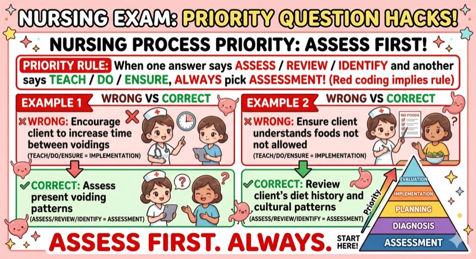
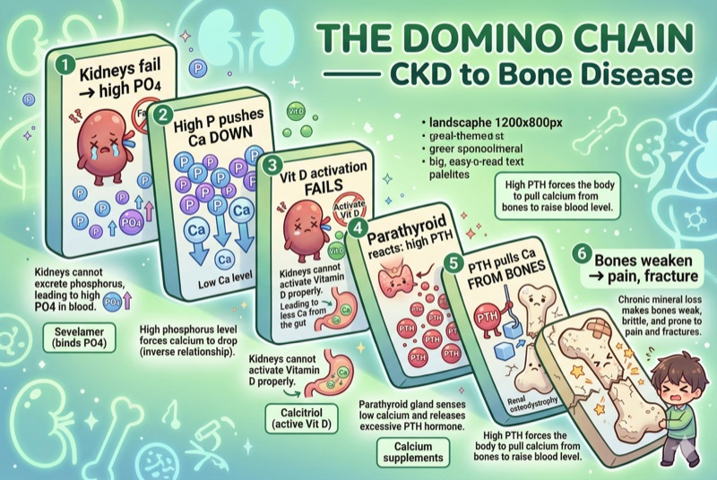

Coming next
Coming next
Neuro final prep
This room opens after the Neuro video, notes preview, and final flashcards are ready.
GI is live now: two Adult Health Final videos, GI My Notes, a Final GI flashcard deck, and a click-through final drill room for last-day practice.
Each room keeps the video embedded, puts chapters under the player, loads the matching Final GI cards, and keeps GI My Notes one step away.
 Study room live
Study room live
GERD, PUD, H. pylori, hiatal hernia, gastritis, IBS vs IBD, UC vs Crohn, toxic megacolon, diverticulitis, obstruction, and colorectal screening.
 Study room live
Study room live
Cirrhosis, ascites, varices, hepatic encephalopathy, lactulose, hepatitis A/B/C, pancreatitis, cholecystitis, and priority chains.
Neuro and MSK/Ortho get the same room pattern only after the video, notes preview, and flashcards are ready.

Coming nextThis room opens after the Neuro video, notes preview, and final flashcards are ready.

Coming nextThis room opens after the MSK/Ortho video, notes preview, and final flashcards are ready.
Visual multiple-choice practice for CAD case logic, neuro, ortho, GI, respiratory equipment, and cumulative traps. No paragraph typing.
1 · WatchOpen the embedded video, use chapter jumps, and flip the Upper/Lower cards right below it.
1 · WatchOpen the embedded video, use chapter jumps, and flip the liver/pancreas cards right below it.
2 · My NotesSee the packet format before opening Gumroad.
3 · Drill32 high-yield cards for Upper GI, Lower GI, liver, pancreas, gallbladder, emergencies, labs, and nursing priorities.
4 · RequestIf a GI final topic still feels missing, send it through the request page so it can become a card, post, or review section.
GI My Notes is built for follow-along studying: visual pages, priority boxes, comparison tables, and practice-style prompts that match the two GI final-review videos.


The GI My Notes packet is live for the final push. Existing Adult Health review and practice exams remain available too.
Gumroad links are Study with Tiago products, not affiliate links.